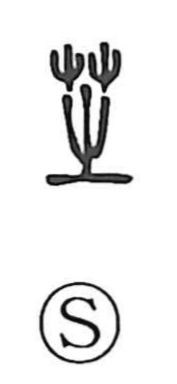

芝

Kun: shiba | On: shi
lawn grass ・ turf
Explanation
芝 is a phono-semantic character: the grass element marks it as a plant term, while 之 acts as the phonetic, indicating the on reading shi. The Shuowen explains it as a ‘divine herb,’ understood as the auspicious reishi mushroom, famed for blooming three times a year and, as a medicine, for easing the body and conferring immortality. In Japanese the sense shifted to everyday groundcover—shiba ‘lawn grass’ and shibakusa ‘turf’—and from performances given on grassy ground came words like 芝居 shibai ‘play’ and 芝生 shibafu ‘lawn.’